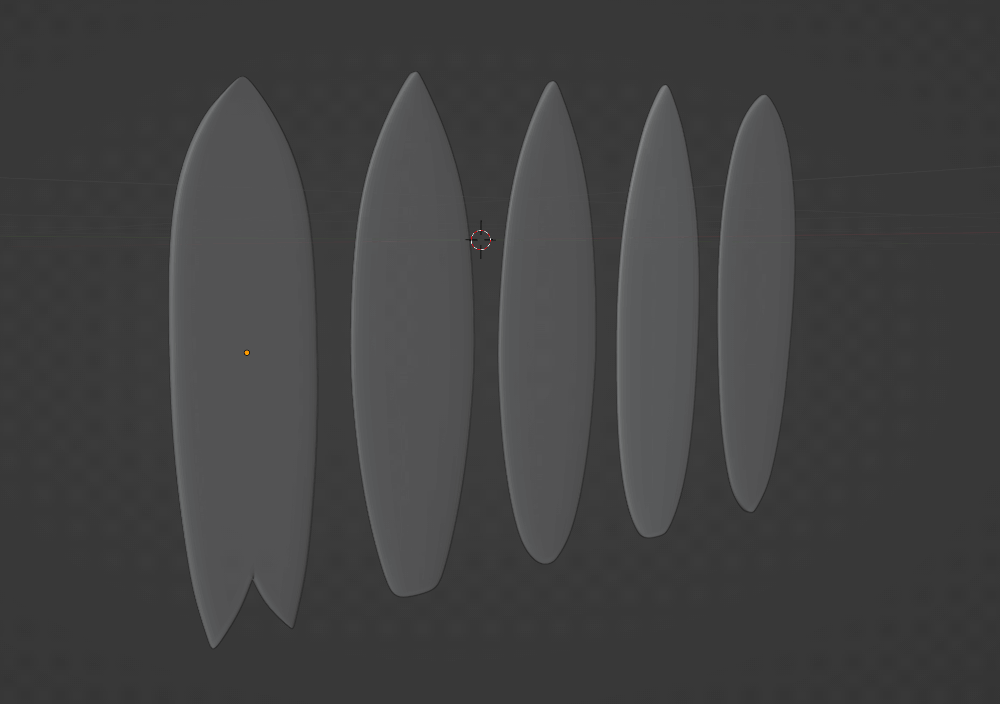
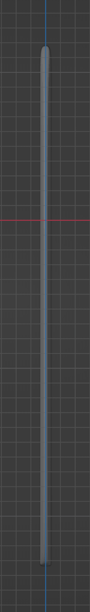
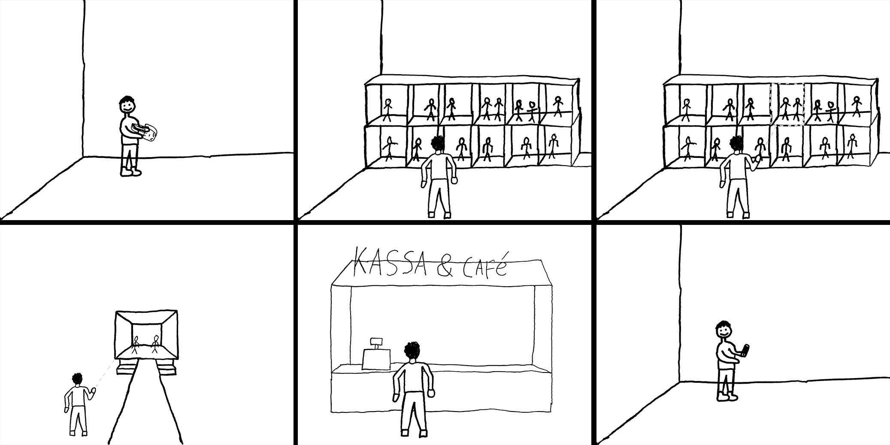
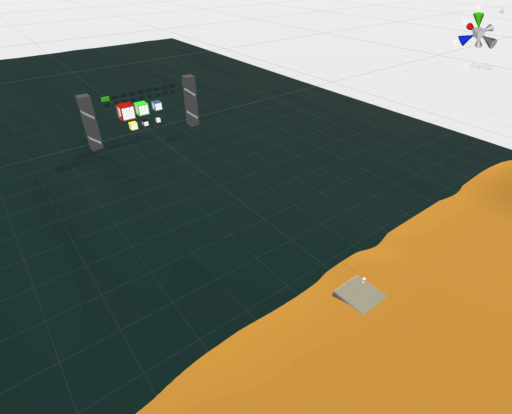
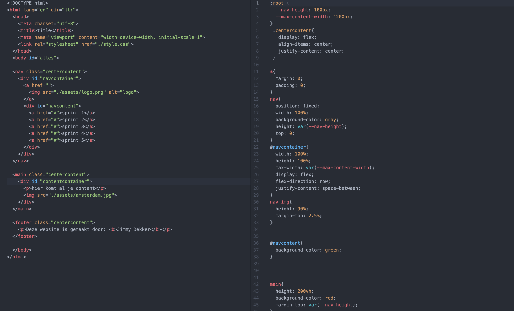

Minor XR
By Jimmy Dekker
About
My name is Jimmy Dekker. I am currently 24 years old and in the 3rd year of the Communication and Multimedia Design course. My specialty is web development. For my minor I chose XR development because I find VR/XR very interesting and I would like to learn more about the developments. In addition, I would like to learn 3D modeling and I am very curious about the VR/XR developments surrounding web development.
This page is about my personal learning path during this minor. In this I show my developments within the categories:
Assets
UX UI Design
Development
Visual Design
If you want to know more about me and my career you can find it on my personal portfolio.
Our team: Reality-Shift
Reality Shift consists of five students studying at the Amsterdam University of Applied Sciences. Our goal is to provide an attractive and functioning VR experience. To deliver good quality, Reality Shift has three important core values: quality, creativity and functionality.
Reality Shift has a diverse team, people who all have different qualities. However, our qualities have something in common, which is that we like to convert our creativity and ideas into a tangible experience.
Customer satisfaction is number one. That is why we conduct interim discussions so that your insights can be applied in the experience.
To keep our teamwork clear, we have created a webpage with an overview of the team members, project information and links to all our work.
Pressure Cooker
To get the minor off to a good start, we started with a 2 week pressure cooker. In this we were introduced to the VR/XR world and we were introduced to the main tools and tricks that we will use in the coming semester.
The Pressurecooker was therefore a short individual project. Want to know more about this? check out my Pressure cooker page.
Learning Goals
To keep up with my developments within the minor, we have drawn up SMART learning objectives. With this you specify your learning objective Specific, Measurable, Achievable, Relevant and Time-Bound.
Goal 1
At the end of this semester I want to be able to independently make 3d models that can be used in VR and therefore not too many triangles. I want to get the knowledge for this learning goal from the courses of teachers, information on the internet and the experience of my classmates.
- specific: I want to learn to independently make 3d models and textures.
- Measurable: The 3d models must be usable on a quest 2 so no more than 50,000 triangles per object.
- Achievable: Through the lessons at school, my own research and the help of my project group.
- Relevant: I want to learn this because we need models for our experience and to experiment with my 3d printer.
- Time-Bound: At the end of this semester.
Goal 2
I want to learn how web vr development works through desk research and experimentation. I want to be able to load at least 1 self-made model including the textures. I would like to learn this to expand my development knowledge and to be able to display my models in a browser.
- specific: I want to learn how to use 3d (vr) in web development.
- Measurable: This learning objective has been achieved when I have been able to make a 3d world with at least 1 homemade model including textures.
- Achievable: Through desk research.
- Relevant: I want to learn this to expand my web development knowledge and to be able to show my models on a browser.
- Time-Bound: At the end of this semester.
Goal 3
I want to learn how to design a map that conveys the desired atmosphere through lessons and tests. The map must be substantiated and I want to learn this so that I know how to create beautiful environments before the end of this semester.
- specific: I want to learn how to design a map that exudes the desired atmosphere.
- Measurable: The map must be substantiated and must have been thought through.
- Achievable: Through Emma's lessons and through AB testing.
- Relevant: I want to learn this so that I can participate in the design of our vr experience.
- Time-Bound: At the end of this semester.
Assets
The assets category is mainly about developing 3d models and textures.
sprint 1
In terms of assets, I mainly worked on my first 3d model with texture during this sprint.
Shovel model
For the shovel I started looking for inspiration on the internet. After a short search I came across the following video:Blender 2.8: Modeling a Shovel. I followed this tutorial until 2:14 after which I made the rest of the shovel myself by means of extrudes, scales and merching of vertexes:
In the end I had a well-modelled scoop, unfortunately with too many triangles. I solved this by using dissolve edges on unnecessary edges:
Finally I had a shovel with only 1,974 triangles and ready to texture:

Shovel model with sand
Om straks zand te kunnen opscheppen hebben we ook een model nodig met zand op de schep. Dit heb ik gedaan door een icosphere toe te voegen aan de scene en die te halveren:
vervolgens heb ik de z as van de sphere kleiner gemaakt en op de gewenste mannier op de schep gepositioneerd:

textures
Om een juiste uv map te krijgen ben ik begonnen met het markeren van bepaalde edges zodat de UV map op de juiste mannier unwrapped kan worden:

Vervolgens heb ik het model geselecteerd en op unwrap gedrukt:

Deze template heb ik vervolgens gebruikt om hout texture en een rode kleur toe te voegen aan het model, Dit heb ik gedaan door een base color toe te voegen op basis van een image:
Dit was het eindresutlaat van mijn eerste 3d model:
Sprint 2
Voor de categorie assets ben ik deze sprint voornamelijk bezig geweest met het modelen van 5 verschillende surfboards.
Surfboard inspiration
Om de juiste vorm en verschillende modellen van de surfboarden te krijgen ben ik op zoek gegaan naar welke modellen er zijn. uiteingelijk heb ik deze afbeelding gebruikt om de vormen te maken.

Surfboards
ik ben begonnen met een 2d overlay over de surfboarden om ze vervolgens te extruden naar de juiste dikte. Ook deze heb ik bepaald doormiddel van referentie afbeeldingen. Na deze stap had ik 5 platte borden:
Natuurlijk zijn surfboarden niet helemaal recht en heb ik ze allemaal een klein beetje krom getrokken:

Surfboard fins
Voor de vinnen leek het mij het makkelijkts om een model te maken en die te hetgebruiken in verschillende formaten op alle borden. Ook bij deze stap ben ik weer begonnen met een refference afbeeldingen om de vormen goed te krijgen:

vervolgens heb ik alle vinnen aan de borden toegevoegd en samengesmolten tot 1 object:

Surfboard uv maps
Om de juiste Uv maps te krijgen heb ik alle naden weer op de zelfde mannier gemarkeerd als bij het schep model. Ik had bij deze modellen alleen wel moeite met de vinnen, uiteindelijk was dit geen probleem omdat die toch een solide kleur moesen worden.

Surfboard textures
vervolgens ben ik op internet op zoek gegaan naar verschillende surfboard designs. Voor elk bord heb ik een ander design gemaakt:


Het resultaat:
UX-UI Design
The UX-UI design category is mainly about designing specific interactions between the user and the vr experience.
sprint 1
During this sprint I was mainly busy brainstorming and developing our idea through storyboards.
Brainstorm
De brainstom hebben we met het gehele team gedaan, dit deden we doormiddel van de crazy 8. Daarna hebben we alle ideeën verder uitgewerkt en een concept op de glazen wand getekend.

Storyboard 1
vervolgens ben ik aan de slag gegaan met het uitwerken van de volgende 2 storyboards.
Storyboard 2 (final concept)
 check the user journeysprint 2
voor deze sprint wilde ik er achter komen op welke afstanden teksten en objecten nog goed zijn te lezen in vr.
distance checker
Omdat we in onze ervaring de blok etalages in verschillende formaten willen weergeven: medium in de blok muur, klein als je hem pakt en groot als hij actief is bij de catwalk. Leek het mij handig om een klein experimentje te doen en te testen op welke afstanden sommige formaten blokken te groot of te klein waren. Dit heb ik gemaakt in een apparte scene in unity.
model
Om te beginnen heb ik het blok model een beetje aangepast met letters en deze in 6 verschillende formaten gescaled.
tests
voor de test hebben we meerdere mensen in deze scene gezet en de instructie gegeven om de kleur en afstand te zeggen op het moment dat de tekst tussen de groene en rode lijn leesbaar is.
result
For some reason the results are blocked by google, im still in contact with the service team trying to recover them.
Development
The development category is mainly about building the vr experience.
sprint 1
For development I have been busy recording the animation for the mannequin, setting up a webvr environment, making the team website and uploading my work on the github branch.
website workshop
Om onze persoonlijke ontwikkeleling binnen dit project bij te houden moeten we deze portfolio website bijhouden. Om de rest van het team verder te helpen met de bouw van de website heb ik aangeboden om een dag een workshop te geven over de basis opzet van een website. Dit hebben we gedaan doormiddel van HTML CSS en JS. Daarbij heb ik een aantal links doorgestuurd die ze tijdens het verder bouwen van de website kunnen helpen.
Doormiddel van felle kleuren kon ik makkelijk uitleggen hoe de cotnainers in elkaar zitten en hoe het positioneren van de elementen werkt.
Een aantal van de sites die ik heb meegegeven en heb behandeld als bron zijn:
HTML element overview.
Meta viewport tagg.
Media query's.
Flexboxes
Record mannequin animation
Om de kleding op de mannequins te kunnen animeren en de mannequins over de catwalk te laten lopen hebben we animaties nodig die we kunnen riggen. Dit zijn we gaan doen met het motion tracking suit van Perception Neuron We hebben de quickstart guide gebruikt voor de installatie en het aantekken van het pak:
En vervolgens het programma zelf uitgevogeld. Uiteindelijk zijn we geindigd met een aantal animaties waaronder:
Tijdens de installatie kwamen we er achter dat alle electronische apparaten uit de buurt van het pak moesten zijn. Als we dat niet deden dan werkte bepaalde sensoren niet.
Web vr research
Een van mijn leerdoelen was het leren van web vr, omdat ik dat niet binnen ons project kan doen heb ik besloten om het te gebruiken bij dit portfolio.
Om te beginnen ben ik op zoek gegaan naar javascript libraries die helpen bij het maken van een vr website.
De voornamelijkste zijn:
React VR
A-frame
and
three.js.
Uiteindelijk heb ik gekozen voor A-Frame omdat ik we achter kwam dat daar een hele handige inspector bij zit waarin je live de wereld kan ontwerpen. Voor het installeren en gebruiken van de three.js heb ik de volgende tutorial gebruikt:
Aframe Webvr - VR Development Part 1 - Setting Up.
Om te leren hoe de inspector en enviroment builder werkt heb ik de volgende video gebruikt:
Easy Environment in A-Frame (beginner tutorial)
Wil je zien hoe de site in elkaar zit? Bekijk dan de code op Github: Bekijk op github
team website
github with sourcetree
sprint 2
deze sprint ben ik qua development vooral bezig geweest met het fixen van de webvr experience.
Rotate around objects
Change camera position on scroll
sprint 3
hier komt text over dingen die ik in sprint 3 heb gedaan
textures on web models
Visual Design
The visual category mainly concerns the appearance of the vr experience, such as the map design.
sprint 1
During this sprint I have mainly been working on the basic design of the map, which includes:
colors
map designs
moodboard catwalk
map prototypes
sprint 3
hier komt tekst voor sprint 3